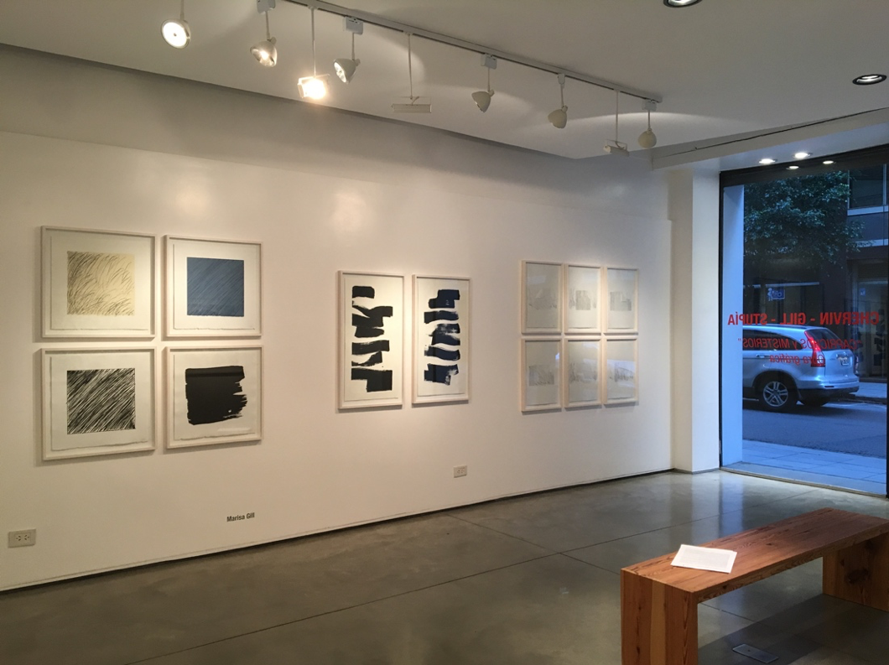
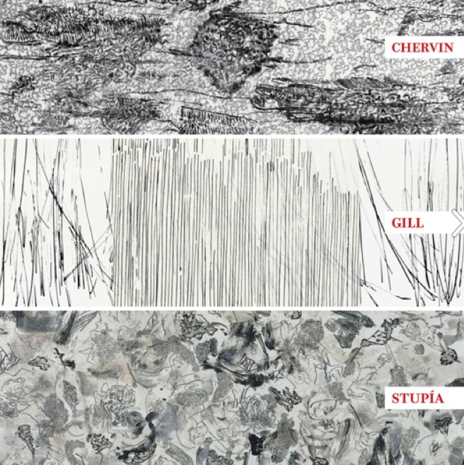
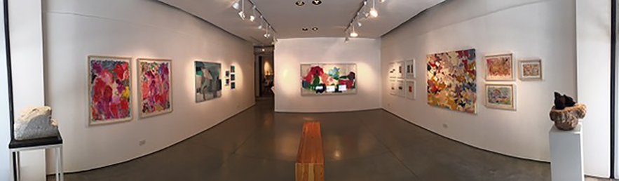
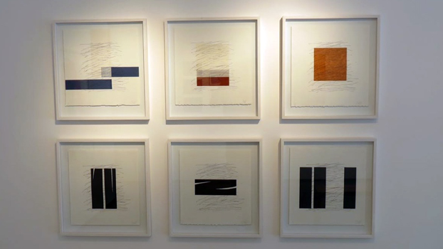
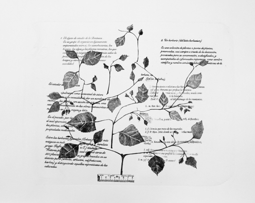
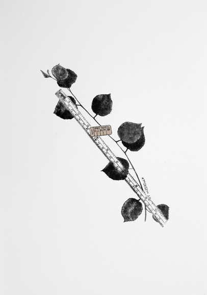
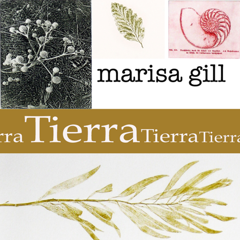
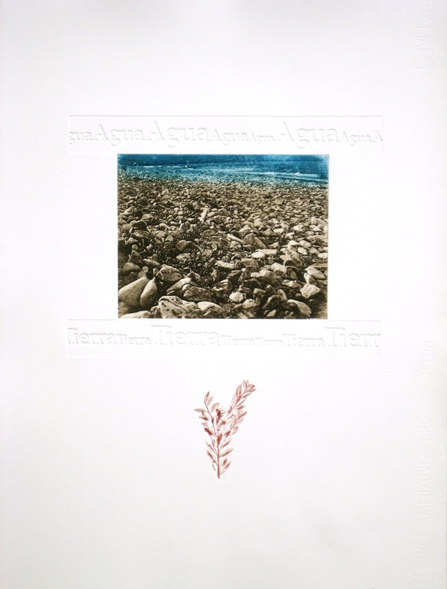
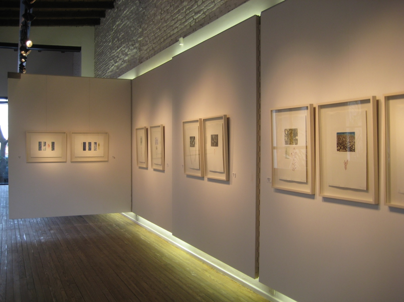

2018
“Caprichos y Misterios”
Serie de litografías y chine collé
 Para Picasso el grabado era, entre otras cosas, una manera de calmarse los nervios, de experimentar, de luchar contra la facilidad del dibujo. Y también, un diario inconsciente de emociones. Es, al menos, lo que explica Brigitte Baer, autora del catálogo razonado de la obra gráfica del artista. Siempre se dijo que la relación del artista español con el grabado fue intensa y pasional.
En esta muestra en la que exhibiremos obra gráfica de Catalina Chervin, Marisa Gill y Eduardo Stupía, y que llamaremos “Caprichos y Misterios, queremos poner el foco justamente en la “Obra gráfica” como disciplina tradicional pero absolutamente contemporánea dentro de las artes visuales.
(…)
Puedo imaginar que la acción física de trabajar con un instrumento, sobre el soporte que sea, genera en el artista algo de lo que no se puede dar cuenta fácilmente con palabras, algo vinculado con una descarga, a eso a lo que siempre se quiere volver aunque parezca un capricho.
Cuando el artista termina su intervención sobre el soporte y hasta que la impresión no está terminada, hay una ventana de tiempo, durante la cual sucede algo muy similar a lo que nos ocurría antaño cuando llevábamos a revelar un rollo de fotos y había que esperar hasta el día siguiente, en el mejor de los casos, para ver el resultado. Esa espera, expectativa o misterio de cómo será el resultado final entiendo que también genera la adrenalina que induce y estimula a seguir grabando.
(…)
Marisa Gill muestra una serie de litografías y chin colé, donde la línea va alternando entre un rol protagónico y otro secundario, pero no menos fundamental. Gill trabaja el chin colé de una forma singular, tanto como para que sus grabados adquieran formas escultóricas. La artista realizó sus trabajos con Matías Amici en el estudio Litográfico Magma en Buenos Aires.
(…)
Picasso realizó más de 2000 obras con distintas técnicas gráficas casi hasta el final de sus días , por lo que se lo puede considerar uno de los artistas grabadores más prolíficos de la historia. Claramente tenía una necesidad imperiosa de seguir grabando.
Eugenio Ottolenghi
Abril 2018
2016
Muestra de artistas de OTTO Galería
Serie de litografías y chine collé
 2011
“Herbario” Litografías y Gofrados
 2012
“ De natural y–eza” Obra Gráfica
Fotograbados y gofrados
 2009
“de la naturaleza” Obra Gráfica
Fotograbados y gofrados
Estas obras reflejan las emociones que viví en medio de la naturaleza, combinando la admiración con la contemplación y la reflexión.
Empecé sacando fotos y me encontré con la naturaleza. De pronto me di cuenta de que el agua y la tierra estaban allí, esperando llamar mi atención. Me reencontré con aquellas experiencias lejanas; el contacto que he mantenido desde niña con el agua, la tierra, las plantas… las playas de California con mis padres, la huerta de mi abuelo, entre los malvones del jardín de mi abuela.
La serie está compuesta por fotograbados realizados a partir de fotografías que tomé en distintos lugares de la Argentina: Purmamarca y Tilcara, Jujuy; Cariló, Buenos Aires; Yuco, Catritre, Quila Quina y lago Meliquina, Neuquén. Las hojas impresas son naturales, recolectadas en la provincia de Neuquén. Trabajé con y en la naturaleza, mezclando lo que recogí con mis recuerdos. Estos elementos: hojas, frutos, semillas, provienen y se apoyan en la tierra. En ella crece y se esconde todo.